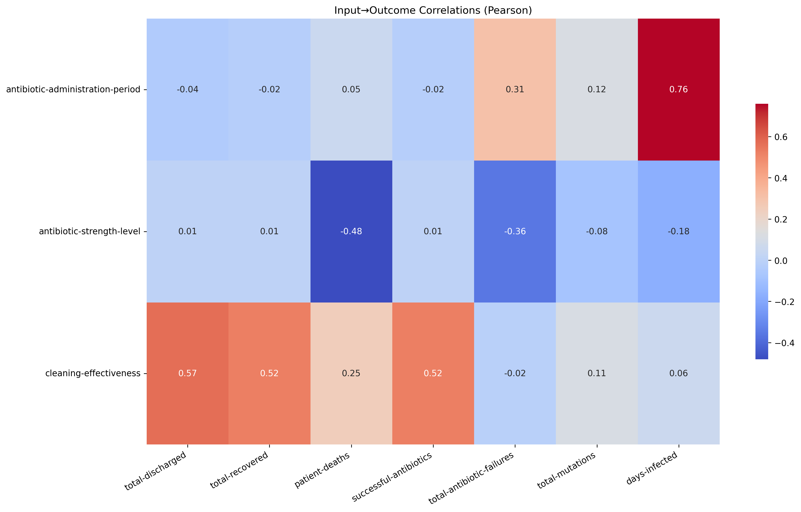
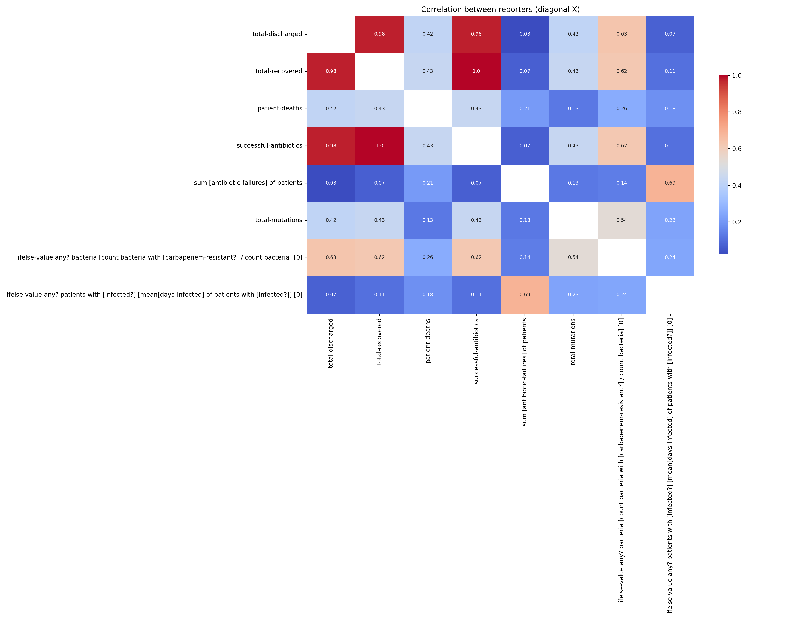

Report
DISCUSSION AND EXPECTED RESULTS
Department of Computer Science
Calvin University
Title: BacteriaSim
Author(s): David Barry and Esther Asuquo
Date: Dec 5, 2025
Advisor: Professor Eric Araujo
Some Useful Insights
The expected outcomes of this project include insights into the evaluation of intervention strategies, and a contribution to the medical field. The simulation we create will allow us to evaluate the effectiveness of public health strategies in controlling bacterial infections. This will help persuade policy decisions and resource allocation, leading to more effective management of antibiotic-resistant bacteria. The findings from the model will contribute to the development of data-driven recommendations for public health authorities. These recommendations may include guidelines for infection control practices, vaccination strategies, and public awareness campaigns. By utilizing agent-based modeling, this project aims to provide valuable data on the current understanding of antibiotic-resistant bacterial infections.
 From the data, we have concluded some interesting metrics. According to Figure 4, we can see that there are some obvious correlations between successful antibiotic administration and the total patients recovering/being discharged. From Figure 3, the most important metrics gathered are from the variable cleaning metrics. We have found that there is a 0.5 positive correlation between cleaning effectiveness and total discharge, total recovered, and successful antibiotics. This signifies that the effectiveness of an environmental clean, or the success per clean, directly impacts whether patients will be able to recover from being infected and eventually discharged. Cleaning effectively also supports successful antibiotic administration, which we found particularly interesting. Since each intervention method happens independently from the other, it would be unlikely that one directly affects the other. However, it could be hypothesized that because of each effective clean on a patch, this would indirectly impact a successful antibiotic administration due to a successful clean leaving patients with a smaller chance to become infected. We have also found that as the amount of time passes before administering antibiotics, the days the patient remains infected increases as well (r = 0.76). Although we have analyzed and obtained some unique and interesting metrics, the model has plenty of complexity left to add, so in the future we would like to do just that, along with coordinating with other domain experts to determine the best course of action to achieve a higher complexity model. Some of the complexities we would like to add are adding other types of hospital agents, such as nurses to administer antibiotics and check on patients and cleaners to conduct cleaning instead of an entire environmental clean. We would also like to reform the bacterial agents to reflect slightly more realistic bacterial reproduction within an environment, introducing quorum-sensing to each type of bacteria, and assess other forms of interventions such as quarantining strategies.
These future additions would be a great steppingstone toward a more realistic hospital scenario. Elaborating on these future additions, it is important to note some key technological points and lessons discovered while creating this model: 1) Mutation isn't just binary. For example, in our current model we implemented a 1% chance every tick that a non-resistant bacteria variant can mutate into their antibiotic-resistant variant, displaying a binary logic of 1 or 0, resistant or not. This can be further enhanced, however, outside of a 0 or 1 binary logic path. Mutations can continue to happen for already resistant bacterial variants, allowing the resistance factor to increase with each mutation. This logical path would represent mutations as a spectrum, instead of an on/off switch. 2) Research is more important than implementation. When creating complex models to simulate real world scenarios, it is important to realize that the preliminary research and development phase of a project is just as, if not more important than the actual implementation. Preliminary research provides useful niches and information for building a strong foundation for a model being built from scratch. For example, the BSim framework, although not necessarily what we were looking for, provided useful insights on how computational agent-based modeling frameworks are structured and integrated using real data. Our model, although meant to be used in advance to optimize health policies against nosocomial bacteria, can be simulated using real world data and statistics from other studies conducted that are similar, in turn providing a level of realism in the model that cannot be implied through the implementation. 3) Cleaning is the backbone to fighting bacteria. These gram-negative bacteria can survive for months on surfaces. This implies that cleaning is not just to support personal hygiene and environmental health, but it is rather a parameter that can fundamentally alter the outcome of bacterial dynamics within a system. This is directly reflected in the input -> output heatmap, where cleaning-effectiveness was directly correlated to not only patient recoveries and discharges, but also to whether antibiotics were successful. We touched on the hypothesis of why this occurrence may be, and although we do not have the resources to test this theory, it would be fundamentally incorrect to inquire that successfully cleaning and removing harmful bacteria from a system would result in a failure to give the infected patient a greater chance at recovery. 4) It is also important to recognize that bacterial transmission through contaminated surfaces is not the only way bacteria spread. Bacteria can also be transmitted through animals, humans, soil, utensils, contaminated water, food, and even biologically from mother to child during breastfeeding. However, to maintain focus, our simulation only models transmission involving contaminated surfaces. In hospital settings, transmission can also occur through human contact, air, water, or food, which are other pathways we would like to explore and test in the future.
In conclusion, this project has provided useful insights into the dynamics of antibiotic-resistant bacterial infections within a hospital environment. The agent-based model developed allows for the evaluation of various intervention strategies, providing valuable data to inform public health policies. Future work will focus on enhancing the model's complexity and realism, as well as collaborating with domain experts to refine intervention strategies further. Gram-negative, antibiotic-resistant bacteria are one of the largest enemies of the human body, at a microscopic level. This is why it is important to discuss the features and dynamics of bacteria to successfully combat these microorganisms and provide useful and relevant data on the subject to guide future health policies.